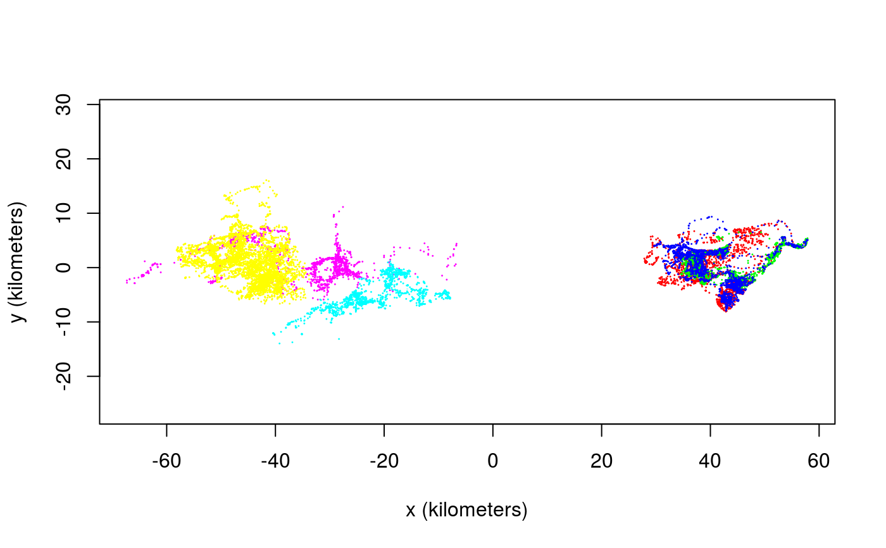
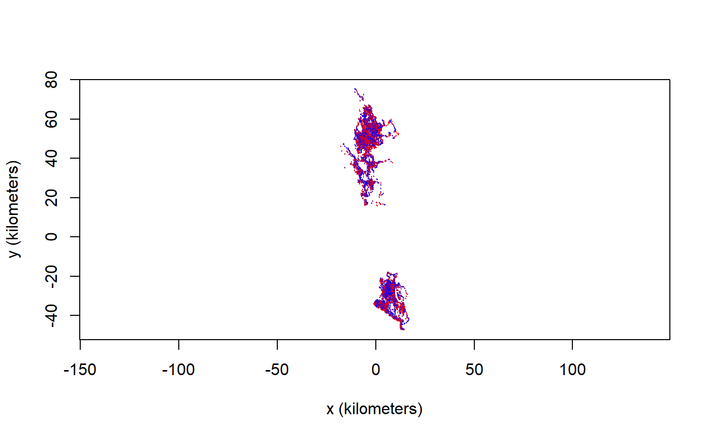

color.RdThese functions facilitate the coloring of tracks by annotating tracking data with time/location specific information and computing color arguments for plot.
annotate(object,by="all",cores=1,...)
color(object,by="time",col.fn=NULL,alpha=1,dt=NULL,cores=1,...)A telemetry object or list of objects. color can also take ctmm and UD objects.
What to annotate or color times by. Options include "individual", "time", "sun", "moon", "season", and "tropic" (see Details below). ctmm and UD objects can only be colored by "individual".
Optional coloring function that can take a [0,1] interval and alpha channel argument.
Base alpha channel value.
Sampling interval specification for making oversampled times more transparent. If NULL, the median will be used. Disabled if zero.
Number of annotations or overlap calculations to peform in parallel. cores=0 will use all cores, while cores<0 will reserve abs(cores).
Additional arguments.
Annotated telemetry objects are required for color by arguments "sun", "moon", "season", or "tropic".
by="time" colors tracking data with a gradient that increases in time.
by="sun" colors according to the sine of the sun's altitude, which is proportional to solar flux during daylight hours.
by="moon" colors according to the illuminated fraction of the moon.
by="season" colors according to the length of the day, and therefore corresponds to the local season.
by="tropic" currently colors according to the calender day, but will eventually be upgraded to tropical-year cycle. The default col.fn argument runs from blue to red with increasing time, sunlight, moonlight, or day length.
by="individual" assigns colors to minimize the maximum combined spatial and color overlap.
Finding the best color assignment is an \(NP\)-hard problem that is here approximated in \(O(N^3)\) time with a custom greedy algorithm.
Other named columns in the telemetry object can also be used with color, by specifying the column name with by.
annotate returns an annotated telemetry object with extra columns to facilitate coloring.
color returns a valid col argument for {plot.telemetry}.
# \donttest{
# Load package and data
library(ctmm)
data(buffalo)
# assign distinct colors to buffalo
COL <- color(buffalo,by='individual')
# Notice the separation into RGB and CMY for maximum contrast
plot(buffalo,col=COL)
#> DOP values missing. Assuming DOP=1.
#> DOP values missing. Assuming DOP=1.
#> DOP values missing. Assuming DOP=1.
#> DOP values missing. Assuming DOP=1.
#> DOP values missing. Assuming DOP=1.
#> DOP values missing. Assuming DOP=1.

# annotate buffalo with sunlight data and compute colors
buffalo <- annotate(buffalo,cores=2) # CRAN policy limits to 2 cores
COL <- color(buffalo,by='sun')
# use North-preserving projection and plot
projection(buffalo) <- median(buffalo)
plot(buffalo,col=COL)
#> DOP values missing. Assuming DOP=1.
#> DOP values missing. Assuming DOP=1.
#> DOP values missing. Assuming DOP=1.
#> DOP values missing. Assuming DOP=1.
#> DOP values missing. Assuming DOP=1.
#> DOP values missing. Assuming DOP=1.

# }